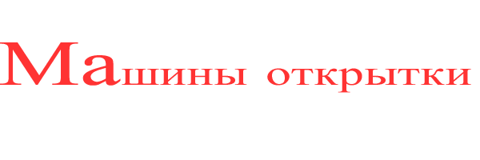

Мне всегда хотелось совместить любовь к живописи и любовь к архитектуре. Путешествуя по Сибири, я сделала несколько снимков, которые затем использовала как основу для новой серии почтовых открыток и открыток для записей. Это удивительные русские окна подлинные шедевры. Я надеюсь, что вам понравятся эти снимки.
Вы можете просмотреть каталог открыток русских окон.
Или вы можете нажать на одну из картинок внизу, чтобы перейти непосредственно к набору открыток.


© Copyright 2021. Все права защищены. Легендарный Игрок.